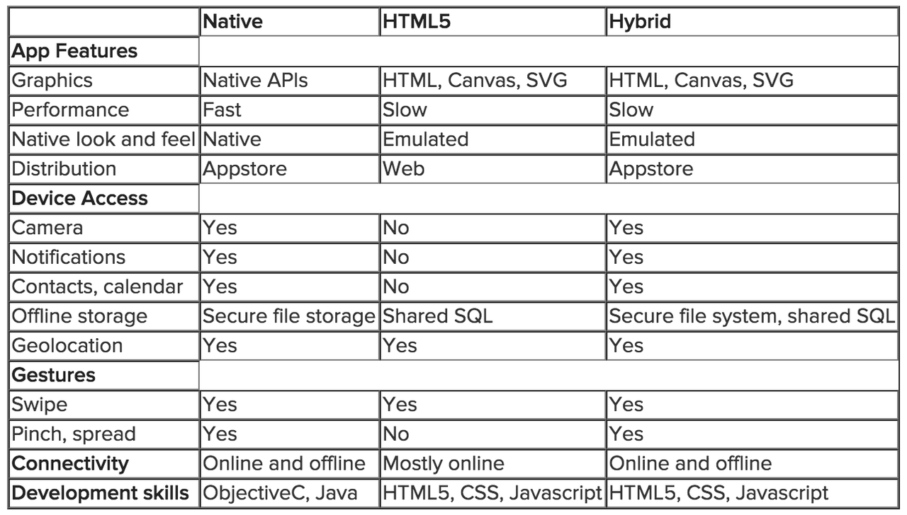

I enrolled in Seattle University's Web Certificate Program to create web sites, something I have been excited about for some time. In the program, students learn front-end web developing skills such as HTML, CSS, and JavaScript programming. While deciding a topic for this paper, I came across articles stating the web is dead,1, 2 claiming apps will be its demise. Naturally, this topic attracted my attention. There are others, however, who disagree with this view.3, 4, 5 They claim web based apps will replace native apps. During the introduction of smartphones,6, 7, 8 native apps dominated. But, as responsive web designs9 became prevalent, mobile websites' presence grew, improving the user's web experience on smaller mobile devices, of varying sizes. They have the advantage of running across multiple platforms and operating systems, reducing application development costs. However, their features do not surpass those provided by native apps. Despite HTML5 and the widespread use of responsive web designs, web apps have not replaced native apps.
Will apps be the end of the web? Having just started the Web Certificate program, this question interested me as this would mean becoming a web developer may not be the wisest endeavor. There are opposing opinions and arguments for both the web's demise and victory. In this paper, I compare native apps to their mobile web alternative in order to better predict the future of the mobile web.
The release of the iPhone sent apps10 mainstream. Today, app usage has surpassed TV, with over 80% of internet users owning mobile devices, and among them, 90% of their time is spent using apps. 11, 12, 13 Native apps are software application programs that reside on the mobile device. They interface directly with the device APIs and operating system. Native apps are typically faster, more efficient, and provide greater usability than web apps. Some of native apps' unique features are multi-touch gestures, fast graphics APIs, fluid animations, and access to built-in device components, such as camera or accelerometer. Their main disadvantage is they are platform specific, requiring developers to learn multiple different programming languages and SDKs. Additionally, these apps are released using apps stores, which include fees, restrictions, and lengthy release processes. In many ways, these stores contradict the open and free concepts established by the web. Furthermore, it is very difficult for apps released to the stores to ever be seen by apps store visitors.14 , 15
Web standards and technologies were originally developed based on large PC screens and landline connections. Over time, the web evolved to accommodate small screens and mobile networks.16 Web apps are mobile websites that reside on servers and not the device. They can either be purely responsive websites or websites that run only on mobile devices, which can have unique URLs starting with the letter m followed by a period. While initially poor, with HTML5 improvements, responsive websites,17, 18 and developer frameworks,19, 20 and developer frameworks, the overall web apps'21, 22, 23 usability has improved significantly. However, this evolution was not quick nor painless.24, 25
Web apps have several advantages compared to native apps.26, 27 They function across mobile device platforms, are able to use the same URLs as their desktop counterparts, have lower development and maintenance costs, and can be upgraded relatively quickly. However, one disadvantage is they rely on servers and therefore have limited offline capabilities. Another disadvantage is they have very limited access to mobile device features and components, where this access depends on the browser APIs (as compared to the native APIs).
Hybrid28, 29 apps achieve the best of both worlds - they have the advantages of native and web apps. Like native apps, these reside on the mobile device, not requiring connection to a server; therefore, they can operate offline. Different than native apps, they are not developed using platform specific programming languages such as Objective C for IOS, Java for Android, or Visual Studio for Windows, nor is knowing the details of their SDKs required. Instead, they are developed using HTML, CSS, and JavaScript. The hybrid app uses a wrapper utility in conjunction with a Webview which allows a web application to interface with the native APIs. The Webview is a browser window that runs within the hybrid app. Frameworks are required to provide the user interface to the web application control. There are many hybrid frameworks30 available.
One example is the popular Ionic framework31, 32, 33, 34. It uses Angular JSAngular JS to provide the web application control within the Webview. Angular JS is a popular open source web application framework (different than hybrid framework). Then, using Apache Cordova as a wrapper, the web application can perform the same as native apps, accessing device features and components. To access these native device APIs, Cordova plug-ins are required. Using the hybrid app, the hybrid framework interfaces with the Webview, which in turn interfaces with the native device APIs via the wrapper.
The main advantage35 of hybrid apps is they can run across platforms while being developed using only web programming languages, thus requiring less resources to deploy on multiple platforms. In the case of the Ionic framework, this requires learning Angular JS, which for web developers is much easier than learning Objective C or Java. This translates to reduced development cost and time. Another advantage is they can be updated without releasing an update through the app store. Their main limitation is they operate using the Webview, which slows performance. For graphic intensive or highly interactive apps, they perform slower than native apps. Another disadvantage is that if the wrapper plug-in that interfaces with native APIs does not exist, accessing the corresponding native feature is not possible until that specific plug-in is developed. Another possible limitation is the hybrid framework may not support all the mobile device platforms, countering its cross platform benefit. In many cases, the user will not be able to tell the difference between native and hybrid apps.36 Table 1 summarizes the advantages of the three types of apps discussed in this paper.
Will apps kill the web as some claim? Judging from the benefits of hybrid apps and their popularity, the web isn't anywhere near death. Just because mobile users may spend 90% of their time on their mobile devices using apps, this doesn't mean the web is going to fade away. It is similar to saying that if everyone spends 98% of their daily travel time in cars, they will soon have no further need for walking. However, the debate still rages on.37, 38 While it is true apps may forever be an integral part of a mobile user’s life, users actually only use a select few apps regularly.39 Most downloaded apps are never used. 40 Most downloaded apps are never used. The 10% of mobile device time not spent on using apps, can be very important to the user. In these cases, the few seconds to type a URL manually, compared to clicking on an app icon, is usually acceptable. In terms of overall value to the user, this 10% time spent accessing the web directly may actually carry more value than the 90% spent in their apps.
Which type of app should a company develop is based on many things,41 , 42 , 43 such as budget, product schedule, developer resources and skills, and expected app features. The decision isn't always simple or easy.44 If your budget is unlimited, you can develop them all. If your app has many interactive features or you want to absolutely ensure optimal performance, native apps are the best choice. If your site is basic, for example, it includes mainly text and images, a web or hybrid app makes the most sense. Many websites fall into this latter category.
Table 1. Native, mobile, and hybrid app comparison. 45
The past decade has seen a dramatic shift in the use of the web as well as a fundamental shift in society because of the technology advancements in mobile networks and devices. While the web and our use of it is changing, is it dying or evolving into something better? If we can learn anything from the ever changing technological scene, it is that the web has been in a continual state of evolution46 from the beginning. Hybrid apps show promise and the web is still center stage. With the expected improvements to both web standards and browsers, it is apparent that the free and open web is still going strong47 , 48 , 49 and has a bright future.